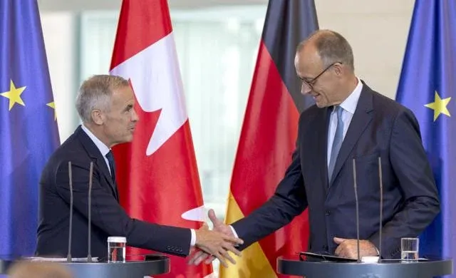

世界苦茶08月27日新闻 | 44条 | 韩国总统在美国声称放弃安全美国经济中国国策

韩国总统在美国声称放弃安全美国经济中国国策 | 美国欧洲就数码税发生矛盾 | 乌克兰单月消灭俄罗斯17%俄炼油产能 | 特朗普单方面解职一位美联储理事
每日三條新聞解析
苦茶数据
美元兑人民币：7.15（昨日7.16，前日7.15）
美元兑日元：147.73（昨日147.69，前日147.34）
上证指数：3862（昨日3868，前日3849）
标普500指数：6465（昨日6439，前日6466）
比特币：111399（昨日110462，前日112553）
布伦特原油：67.25（昨日68.33，前日67.75）
中国新闻
• 佛山终止登革热三级响应 ：随着基孔肯雅热疫情防控工作取得阶段性成效，中国广东省佛山市终止了突发公共卫生事件三级响应。综合南方+和第一财经报道，佛山市政府星期二在基孔肯雅热疫情防控新闻发布会上称，佛山每日新增基孔肯雅热报告病例连续九天维持在50例以下，根据中国国家疾控工作组8月17日给出的评价标准以及中国国家卫健委8月22日向社会发布的信息，佛山已进入疫情低水平散发状态，佛山市政府决定终止突发公共卫生事件三级响应。此前，佛山市政府在7月29日公告称，根据突发公共卫生事件有关应急预案，结合当前佛山市基孔肯雅热疫情防控形势，决定启动佛山市突发公共卫生事件三级响应。
• 习近平会见柬埔寨国王 ：中国国家主席习近平强调，面对变乱交织的国际形势，中国和柬埔寨两国要更加坚定地站在一起，加强团结协作。据新华社报道，习近平和夫人彭丽媛星期二上午在中南海会见柬埔寨国王西哈莫尼和太后莫尼列。习近平欢迎西哈莫尼出席中国人民抗日战争暨世界反法西斯战争胜利80周年纪念活动。习近平说，中柬关系历经国际风云考验，结成风雨同舟的铁杆友谊，成为两国人民的宝贵财富，值得双方倍加珍惜。面对变乱交织的国际形势，中柬两国要更加坚定地站在一起，赓续传统友谊，加强团结协作，加快建设新时代全天候中柬命运共同体，为两国人民带来更多福祉。
• 全国人大常委会九月开会 ：中国全国人大常委会将会从9月8日至12日召开会议，议程包括：听取全国人大常委会办公厅关于“十五五”规划纲要编制工作若干重要问题专题调研工作情况的报告、审议全国人大常委会代表资格审查委员会关于个别代表的代表资格的报告、审议有关任免案。据新华社报道，星期二举行的全国人大常委会委员长会议决定，全国人大常委会第十七次会议9月8日至12日在北京举行。委员长会议建议，全国人大常委会会议审议原子能法草案、突发公共卫生事件应对法草案、国家公园法草案、仲裁法修订草案、法治宣传教育法草案、食品安全法修正草案、危险化学品安全法草案、生态环境法典总则编草案、生态环境法典生态保护编草案、生态环境法典绿色低碳发展编草案、国家发展规划法草案、监狱法修订草案。
• 中方要求日方澄清阅兵言论 ：有消息人士称，日本政府已呼吁各国不要参加中国纪念抗日战争胜利80周年的九三大阅兵，中国外交部星期二强硬表示，要求日本澄清。中国外交部发言人郭嘉昆星期二主持例行记者会。他回应有关日本呼吁各国不要参加中国抗战纪念活动的问题时说，中国已向日本提出严肃交涉，要求日本澄清。郭嘉昆说，中国政府隆重纪念中国人民抗日战争暨世界反法西斯战争胜利80周年，是为了铭记历史，缅怀先烈、珍爱和平、开创未来。他进一步说，任何正直、坦荡面对历史、切实汲取历史教训、真正致力于和平发展的国家都不会对此心怀疑虑，甚至提出异议。
• 香港19岁女生被控煽动罪 ：香港一名19岁的女生为颠覆组织“香港议会”拍摄宣传短片，被控煽动罪。综合《星岛日报》和《明报》报道，香港警务处国家安全处星期二上午落案检控一名19岁女生“出于煽动意图作出一项或多项具煽动意图的作为”罪。港警国安处指控，这名女生涉嫌在今年3月至5月期间，为名为“香港议会”的颠覆组织拍摄宣传短片，并通过社交平台呼吁他人参与投票，以图推翻及破坏中华人民共和国中央政权或香港特别行政区政府政权。
• 国航客机引擎故障西伯利亚降落 ：俄罗斯国家航空监管机构星期二发表声明称，一架载有265人的中国国际航空公司客机，从伦敦飞往北京途中因发动机故障在西伯利亚备降。据路透社报道，全球航班跟踪服务网站Flightradar24的数据显示，这架波音777客机降落在俄罗斯西伯利亚的下瓦尔托夫斯克机场。俄罗斯民航局称：“一架中国国际航空公司的波音777-300客机在从伦敦飞往北京途中，机组决定在俄罗斯的一处备降机场降落。初步原因是其中一台发动机出现故障。”
• 中国建成最大充电网络 ：中国建成全球最大电动汽车充电网络，每五辆电动汽车就有两个充电桩。据新华社报道，中国国家能源局局长王宏志星期二在国新办举行的“高质量完成‘十四五’规划”系列主题新闻发布会上公布相关数据。王宏志说，中国构建起全球最大、发展最快的可再生能源体系，可再生能源发电装机占比由40%提升至60%左右。
• 中国社媒上出现侮辱日本昭和天皇的视频： 在中国9月3日即将举行纪念抗战胜利八十年活动前夕，中国的社交媒体网站上出现了侮辱昭和天皇的视频被传播的情况。日本政府考虑到对日中关系的负面影响，已向中方提出交涉，希望尽快采取适当措施。被认为存在问题的视频被上传至抖音以及小红书等平台。视频疑似利用人工智能生成，其中包括像狗一样四肢着地、发出叫声的画面。位于北京的日本驻华大使馆也已向中国政府提出交涉，希望妥善应对。中国外交部副新闻司司长郭嘉昆26日在记者会上表示相关情况正在调查中。截至26日傍晚，在中国社媒上部分视频已删除，但部分仍可观看。
亚太印太新闻
• 日本拟提高外企签证门槛 ：日本政府公布的一份文件显示，当局计划对外国企业家实施更严格的签证申请条件，最低资本要求将提高五倍，达到3000万日元，而且，申请人需要在日本聘请至少一名全职员工。在7月份的参议院选举中，一个反对移民的政党获得了支持，导致执政联盟失去了多数席位，之后日本出台了更严格的规定。路透社引述日本法务省在星期二发布的文件草案说，政府将在9月24日之前征求公众意见，接着在10月份实施这些改革措施。
• 国民党主席选举再起波澜 ：国民党主席10月改选，党主席朱立伦盼请台中市长卢秀燕再考虑参选党主席；立委罗智强也说，若任党主席将征召卢参选2028。孙文学校总校长张亚中批评蓝营人士都在消费卢秀燕，认为卢有她不选的考虑，大家应尊重。据联合新闻网、中时电子报等报道，张亚中星期二出席记者会时表示，卢愿意做好做满台中市长，这是她的情怀，大家要尊重，并质问怎么会搞出“禅让制度”。他续问，难道初选机制不重要了吗？还是只相信自己的政治判断力？
• AIT处长会见台湾朝野人士 ：美国在台协会星期一在社交平台发文称，处长谷立言分别与台湾朝野阵营成员会面。美国在台协会当天傍晚在脸书发布第一则贴文写道，谷立言上周与台湾国防部长顾立雄会面，讨论美国将持续依据《台湾关系法》履行对台承诺，以强化台湾防卫能力。双方也交换意见，探讨美台在传统与不对称军事吓阻以及社会韧性领域的进一步合作。台湾民视新闻网报道，顾立雄星期二对此回应时说，台美军事交流一向是维护区域的和平安全稳定，与AIT的交流也是其中一环；至于会谈内容，依循惯例都不宜公开。
• 韩国检方再传讯金建希 ：负责调查韩国前总统尹锡悦夫人金建希弊案的独立检察组（独检组）星期二表示，将传讯金建希的日期推迟一天，改在星期四上午10时进行。韩联社报道，韩国独检组星期一要求金建希在27日上午10时到案受讯，但金建希方面提交说明，称她身体状况不佳，无法到案受讯。独检组考虑到金建希的羁押期限于8月31日截止，预计28日传讯金建希，可能在29日对她提起公诉。金建希8月12日被批捕后，独检组于14日、18日、21日和25日传讯金建希，就介选案、操纵股价案、号称“乾津法师”的全成培和统一教请托相关疑点进行调查，但金建希几乎全程保持沉默，拒绝陈述。
• 日本抗议中方东海新建筑 ：中国在东海新设建筑物，日方提出强烈抗议。据日本共同社报道，日本外务省星期一称，在东海日中中间线中方海域发现中国设置一座新建筑物的举动。日本外务省亚洲大洋洲局长金井正彰当天向中国驻日本大使馆公使施泳提出强烈抗议，指这是单方面的开发行为。
• 李在明称韩难再走安美经中路 ：韩国总统李在明在华盛顿说，韩国不能继续走“安全靠美国，经济靠中国”路线。韩联社报道，李在明星期一应邀在美国智库“战略与国际问题研究中心”发表演讲，并就“韩国在安美经中”的说法作出如上表述。“安美经中”指的是韩国与美安全合作，与华经济合作，力求在美中两国之间“左右逢源”。李在明说，在美国强力牵制中国，甚至采取对华封锁政策之前，韩方确实坚持“安美经中”路线。近些年，国际社会出现供应链重组，美国明确对华牵制方针。如此一来，韩国也只能在美国的基本政策框架内行动和做出判断。 （翻評：嚯！）
• 特朗普提及驻韩美军基地地皮 ：美国总统特朗普在白宫同韩国总统李在明举行会谈时暗示，美方可能会要求韩方转让驻韩美军基地地皮所有权。韩联社报道，特朗普在星期一的会谈上被记者问及“是否考虑裁减驻韩美军规模”时说，鉴于双方是“朋友”，不想在此多谈。但他指目前超过4万名美军驻扎在韩国，韩方在他第一个任期内同意增加驻韩美军经费分担额，但在拜登政府时期对此提出异议。目前驻韩美军的实际规模为2万8500人。特朗普还谈及驻韩美军基地地皮所有权问题，称韩国并非将地皮转让给美方，而是以租赁方式提供，转让和租赁完全是两回事。
• 朝鲜谴责美韩军演挑衅性 ：朝鲜军方谴责美韩“乙支自由之盾”联合军演危及地区安全环境，绝非驻韩美军司令部所称的“防御性”训练。韩联社引述朝中社星期二报道，朝鲜人民军总参谋部第一副总参谋长金永福25日发表谈话，称世界最大的拥核国家及其追随国家开展针对朝鲜的大规模战争演习，“此次联合军演从性质、规模和执行方式上刷新过去一切反朝战争预演纪录，是挑衅性质越发突出的实战演习。”谈话说，此次演习实际上已变成多国联合军演，野外机动训练次数和时长创历史新高。“乙支自由之盾”演习已变成在亚太地区乃至世界范围内规模最大、持续时间最长、性质最恶劣的战争演习。朝方正在密切注视一切情况，并已做好准备应对任何事态。
科技新闻
• 阿里发布新视频生成模型 ：中国科技巨头阿里巴巴更新了开源视频生成模型，延续人工智能快速升级节奏，以跟上中美竞争对手。据彭博社报道，阿里巴巴星期二发布声明称，通义万相“Wan2.2-S2V”仅需一张静态图片和一段音频，即可生成面部表情自然、口型一致的电影级数字人视频。据通义万相的微信公众号消息，这款模型单次生成的视频时长可达分钟级，大幅提升数字人直播、影视制作、AI教育等行业的视频创作效率。目前，模型已在通义万相官网上线。
• 苹果宣布9月秋季发布会 ：当地时间周二，苹果公司宣布，将于北京时间9月10日凌晨1点在总部举办一年一度的秋季发布会，主题为 “令人惊叹”。活动将在苹果园区的史蒂夫·乔布斯剧院举行，苹果在人工智能技术竞赛中落后于竞争对手之际，除了消费者之外，投资者也将密切关注此次发布会。苹果表示，本次发布会将在官网进行直播。按照惯例，苹果预计将在此次活动中发布新一代iPhone，即 iPhone 17 系列。据爆料，iPhone新机型可能会在背部加入类似谷歌Pixel的横条形摄像头模组。苹果也可能借此机会介绍iOS 26中的Liquid Glass全新界面设计及其他软件更新，并进一步展示苹果智能的功能，例如Siri的AI升级。
• 谷歌升级Gemini图像模型 ：谷歌正在升级其 Gemini 模型，为其添加一个全新的 AI 图像模型，让用户能够更精细地控制照片编辑。此次名为 Gemini 2.5 Flash Image 的更新将于周二向所有 Gemini 应用用户以及通过 Gemini API、Google AI Studio 和 Vertex AI 平台的开发者推出。最近几周，社交媒体用户对 LMArena 上一款以“nano banana”的化名匿名的 AI 图像编辑模型赞不绝口。
• 研究稱AI正在破坏美国年轻人的就业前景： 周二，由三位斯坦福经济学家联合发布、尚未经过同行评议的最新研究显示，AI正显著削弱部分美国年轻人的就业前景。而受冲击最严重的，是那些生成式AI最容易替代人工任务的岗位，例如软件开发。以22至25岁的软件开发人员为例，截至今年七月，该群体雇员人数比2022年底峰值低了近20%。26至30岁员工的岗位数量基本持平，而更年长的劳动者人数则继续增长。这带来一个潜在悖论：如果年轻开发者赖以积累经验的初级任务已被AI吃掉，下一代专家从何而来？研究作者指出：“我们必须更系统地培训新人，而不能指望他们在日常工作中自然习得。”
财经新闻
• 中国新能源车推动用电激增 ：中国国家能源局电力司司长杜忠明说，目前全球有一半以上的新能源汽车行驶在中国，绿色低碳的出行理念和能源消费方式已深入人心。杜忠明在国新办星期二举行的新闻发布会上指出，“十四五”以来，以电动汽车等“新三样”为代表的先进制造业，以及以人工智能、大数据等为代表的数字产业，带动了中国用电需求的快速增长。数据显示，2024年，中国新能源整车制造用电量同比增长34.3%，互联网和相关服务用电量同比增长20.5%；今年1至7月电动汽车充换电服务用电量同比增长超40%。
• 德加签署关键原材料合作协议 ：德国和加拿大签署协议，旨在加强关键原材料领域的合作，以减少对中国的严重依赖。德国总理默茨星期二在柏林与加拿大总理卡尼共同出席新闻发布会时说，“这是朝着加强两国经济、增强其安全性迈出的积极一步。”法新社引述卡尼说，全球贸易波动、乌克兰战争、冠病疫情等一系列因素，都暴露了关键矿产供应链的脆弱性。他说：“加拿大可以在加速德国和欧洲经济多元化方面发挥作用。”
• 法财长警告或需IMF介入 ：法国财政部长隆巴德说，如果由总理贝鲁领导的少数派政府下个月倒台，国际货币基金组织可能不得不介入法国经济。路透社报道，法国总理贝鲁星期一要求国民议会9月8日对他领导的政府进行信任投票，以设法摆脱政府面临的困境。但三大主要反对党已表示不会给政府投信任票，这意味着贝鲁政府被推翻的可能性越来越大。隆巴德接受法国国际广播电台采访时说：“我们正处于战斗最激烈的时刻。“他表明绝对不会接受”贝鲁政府在信任投票中落败的结果。
• 美拟对印度加征50%关税 ：美国特朗普政府在星期一发布的通知草案中，概述了美国对印度产品征收50%关税的计划。这显示，在俄乌促成和平协议的努力似乎陷入停滞之际，白宫计划推进对印度加征关税的计划。彭博社报道，根据美国国土安全部发布的通知，50%关税将针对“2025年8月27日美国东部夏令时间零时01分或零时01分后进入消费市场或从仓库取出用于消费的”印度产品。特朗普8月早些时候宣布，由于印度购买俄罗斯石油，将把印度进口商品的关税从25%提高一倍至50%。
• 海底捞上半年营收再下滑 ：在香港上市的海底捞国际控股有限公司股价创4月7日以来盘中最大跌幅，此前这家中国火锅连锁餐厅报告指出，因为激烈竞争和消费者情绪疲软，它上半年销售额下跌，这是它连续第二个半年业绩下滑。彭博社报道说，海底捞星期二股价在香港一度下跌多达6.5%。根据星期一发布的业绩报告，截至6月底上半年，海底捞营收同比下降3.7%至207亿人民币，符合分析师预期。上半年净利润同比下降14%至17亿6000万人民币。
• 中国钢铁半成品出口暴增 ：今年前七个月，中国钢铁半成品出口量激增320%，即便在一波贸易措施出台后，钢铁出口仍呈现前所未有的增长势头。据彭博社报道，半成品钢材是指在销往汽车、建筑或消费品等行业前须再加工的中间产品。之前钢坯等半成品钢材在出口中所占比重极小，但随着国内压力加剧，并且越来越多国家试图限制常见钢材产品流入，这一情况正在改变。中国海关数据显示，今年前七个月，中国半成品钢材出口量激增320%，达到740万吨，主要受对东南亚和中东的供应增加推动；仅在7月，出口量就超过150万吨，约占中国对全球其他地区钢铁总出口的14%。
• 中化集团出售山东炼厂 ：路透社引述七名贸易消息人士和拍卖文件称，中国国有企业中化集团已通过上周五结束的拍卖，以远低于估值的价格，将山东另外两家破产炼油厂出售给当地炼油商。此次收购发生在全球最大炼油基地整合之际，新业主预计将增加原油进口，并恢复陷入困境的炼油厂运作，从而推高中国这一全球最大进口国的石油采购量。路透社报道称，此次出售意味着中化集团将退出山东。山东是中国大多数独立炼油厂的聚集地，这些炼油厂占中国原油进口的五分之一。
• 美同意豁免印尼部分关税 ：印度尼西亚首席关税谈判代表艾尔朗加说，美国已在原则上同意豁免印尼可可、棕榈油和橡胶的关税，这些产品不受美国总统特朗普自8月7日起征收的19%关税的影响。艾尔朗加是印尼经济事务统筹部长。他星期二在接受路透社采访时说，一旦双方达成最终协议，豁免将立即生效，但由于美国正忙于与其他国家进行关税谈判，因此尚未设定具体时间表。艾尔朗加说，两国在关税谈判中还讨论了美国与印尼主权财富基金达南塔拉集团和印尼国家能源公司合作，在印尼投资燃料储存设施的可能性。
• 美国关税冲击日本出口与利润 ：日本财务省近日发布的贸易统计数据及主要上市公司财报显示，美国关税政策对日本经济产生显著负面影响，汽车及零部件、钢铁、化工等多个行业利润严重缩水，中小企业普遍担忧美国加征关税将引发减产等连锁反应。新华社引述数据说，日本对美国汽车及零部件等出口明显下滑，导致日本7月对美出口额同比下降10.1%至1.73万亿日元，连续四个月同比下降。由于日美贸易协议有关将输美汽车及汽车零部件关税下调至15%的内容尚未实施，目前日本输美汽车仍面临高达27.5%的关税。受此影响，7月日本对美汽车出口额同比下降28.4%至4220亿日元，出口量同比减少3.2%至12.35万辆。日本经济新闻社日前对东京证券交易所主板市场中1069家企业进行的统计结果显示，美国加征关税给日本多个行业造成广泛影响，今年第二季度上述企业合计净利润时隔三年出现下降，同比减少12%至12.3万亿日元。其中，汽车及零部件行业受损最严重，二季度利润下滑约9800亿日元，降幅为45%。本田因关税成本大幅增加，净利润下降50%。
• 韩美签署多项制造业协议 ：韩国产业通商资源部星期一在美国华盛顿举办“韩美商业圆桌会议”，韩美两国企业也在当天签署了11份制造业相关协议和谅解备忘录。韩联社报道，在韩国产业部长官金正官和美国商务部长卢特尼克的见证下，两国企业星期一签署了涉及造船、核电、航空、液化天然气、关键矿产等领域的多份协议和谅解备忘录。其中，造船和核电等战略产业领域的谅解备忘录共有6份。造船方面，HD现代、韩国产业银行和美国私募基金博龙资本签署了加强和重振美国和盟友海洋力量的谅解备忘录，双方将在美国造船业、海洋物流基础设施、先进海洋技术等方面加强合作；三星重工业和维戈尔海事集团也签署谅解备忘录，将在美国海军补给舰的建造、维护、修理和大修，以及船厂现代化、联合造船等方面建立战略伙伴关系。 （翻評：其中包括對美投資1500億美元。）
• 美考虑制裁欧盟官员 ：两名知情人士透露，美国政府正在考虑对负责执行欧盟《数码服务法案》的欧盟官员或欧盟成员国官员实施制裁。路透社报道，这是前所未有的举措，料将加剧特朗普政府对它认为欧洲压制保守派声音企图的打击行动。特朗普政府指这项具有里程碑意义的法案扼杀言论自由，是对美国人的言论审查，并增加美国科技公司的成本。
• 特朗普威胁加征数码税关税 ：美国总统特朗普警告实施数码服务税的国家，若不取消此类立法，他将向来自这些国家的商品征收“后续附加关税”。路透社报道，特朗普星期一在社媒平台写道：“我郑重通知所有实施数码税、立法、规定或法规的国家，如果你们不取消这些歧视性的措施，我作为美国总统，将对该国出口到美国的商品征收大幅度的额外关税，并对我们高度保护的技术和晶片实施出口限制。”欧盟与美国7月在苏格兰达成贸易协议，但因欧盟希望维护数码法规，导致双方推迟发布贸易联合声明。
• 波兰不顾特朗普威胁，推进3%数字税计划： 波兰政府计划在年底前完成数字税的立法工作，尽管美国前总统唐纳德·特朗普威胁要对征收此类税收的国家加征关税。波兰数字部发言人在回应特朗普言论时对 Politico 表示：“目前正在准备法案草案，预计将在2025年底前完成。”本周一，特朗普在其社交平台 Truth Social 上发文威胁称，将对有数字税的国家加征关税。特朗普写道，数字税是“为了伤害或歧视美国科技公司而设计的”。不过，波兰数字部在声明中表示，波兰的数字税并不会“针对任何特定国家的企业”，“它将适用于所有相关的市场参与者。”
俄乌战争
• 美俄谈乌克兰和平兼议能源 ：五名知情人士透露，美国和俄罗斯政府官员为实现乌克兰和平而在本月进行谈判期间，还讨论了几项能源协议。路透社引述这些知情人士说，美方希望通过这些交易激励克里姆林宫同意与基辅达成和平协议，华盛顿则放松对俄罗斯的制裁。俄罗斯2022年2月全面入侵乌克兰后受到制裁，俄罗斯能源领域的大部分国际投资和重大交易均被切断。
• 习近平会见俄杜马主席 ：中国国家主席习近平与到访中国的俄罗斯国家杜马主席沃洛金会面时强调，中俄双方要携手捍卫两国安全和发展利益。据新华社报道，习近平星期二上午在北京人民大会堂会见沃洛金时，形容中俄关系是动荡变革的当今世界最稳定、最成熟、最富战略内涵的一组大国关系，并强调持之以恒推动中俄关系高水平发展，符合两国人民根本利益，也是世界和平的稳定源。习近平也提到，中国和苏联分别作为第二次世界大战亚洲和欧洲主战场，为抗击日本军国主义和德国法西斯侵略付出巨大民族牺牲，为赢得二战胜利作出重大贡献。
• 中俄议会合作强调二战史观 ：中国全国人大常委会委员长赵乐际与俄罗斯国家杜马主席沃洛金共同主持会议时说，要密切在各国议会联盟、金砖国家议会论坛等多边机制内的沟通协调，发出共同声音，坚决捍卫二战胜利成果，弘扬正确二战史观，维护以联合国为核心的国际体系。据中新社报道，赵乐际星期一在北京人民大会堂同沃洛金共同主持中俄议会合作委员会会议。赵乐际说，在中国国家主席习近平和俄罗斯总统普京的战略引领下，中俄新时代全面战略协作伙伴关系始终保持健康、稳定、高水平发展态势。双方政治互信不断深化，战略协作更加紧密，各领域合作有序有效推进。
• 乌克兰击毁俄罗斯17%的石油产能——而这仅仅是本月的战果： 乌克兰通过近期一系列无人机空袭关键基础设施，使俄罗斯17%的石油炼制产能停摆，路透社报道。这些袭击在过去一个月内展开，扰乱了燃料加工，引发汽油短缺，并打击了莫斯科战争经济的核心，同时华盛顿正试图促成和平协议。乌克兰军队持续通过攻击俄罗斯境内纵深的基础设施来削弱其战争能力。近期，打击重点集中在俄罗斯的炼油厂和南部铁路。路透社计算，乌克兰的袭击使俄罗斯每天 110万桶 的炼油能力受损。无人机袭击了 10家工厂 ，其中包括卢克石油位于伏尔加格勒的炼油厂，以及俄罗斯石油公司在梁赞的设施。其他受损炼油厂还包括罗斯托夫州、萨马拉州、萨拉托夫州和克拉斯诺达尔边疆区的设施。
• 沙尼亚坠毁无人机疑受俄干扰 ：塔林官员称，一架在爱沙尼亚坠毁的武装无人机很可能是因俄罗斯在波罗的海地区的电子干扰而偏离航线的乌克兰无人机。该国国防部长汉诺·佩夫库尔在塔林的新闻发布会上表示，周一下午在爱沙尼亚南部的农田发现了爆炸无人机的残骸。官员们表示，他们仍在调查这架无人机，并且不认为其来源于俄罗斯，可能是乌克兰在周日袭击俄罗斯波罗的海港口乌斯季卢加时部署的。与俄罗斯接壤的三个波罗的海国家最近均对俄罗斯电子战显著激增发出警告，称电子战活动扰乱了无人机及民航客机的导航系统。
国际新闻
• 马克龙回信批评内塔尼亚胡 ：法国《世界报》星期二刊登法国总统马克龙给以色列总理内坦亚胡的一封回信，马克龙在信中指出，占领加沙地带、强迫巴勒斯坦人流离失所，永远不会给以色列带来胜利。新华社报道，内坦亚胡17日致信马克龙，表达对“法国反犹太主义抬头”的担忧。马克龙在回信中说，鉴于内坦亚胡在他收到信之前就公开信件内容，出于对等原则，他也选择将回信同时在媒体上公布。马克龙说，法国一直积极打击反犹行为，但内坦亚胡却在信中指责法国“不作为”，这种指责令人无法接受，是对整个法国的“冒犯”。
• 以军承认袭击医院调查不足 ：以色列军方8月26日称，袭击纳赛尔医院的目的是打击和拆除“哈马斯放置的”摄像头以消除威胁。以军称，该摄像头被哈马斯用于观察以军活动，以指挥针对他们的恐怖活动。该说法遭到哈马斯官员否认并质疑以军有多种手段来拆除摄像头，无需使用坦克炮弹。以军并未解释为何实施两次袭击，也未提供证据证明其中6名死者是所谓的武装分子。被以军认定是武装分子的死者中，有两名已确定为医院的医护人员和民防机构的司机。以军总参谋长承认调查中存在的一些“不足”，包括用于拆除摄像头使用的弹药类型。以总理内塔尼亚胡表示，以色列将在寻求停火的同时发动加沙城的攻势，并认为这是削弱哈马斯和营救人质的最佳方式。但人质家属及支持者更倾向于通过协议来释放人质。26日早些时候，抗议者点燃轮胎，封锁道路，呼吁停火。卡塔尔外交部26日表示，哈马斯此前已宣布接受新的停火提议，该提议在很大程度上与以色列先前提出的要求一致。自哈马斯作出积极回应已过去近十天，但以色列方面仍无正式答复。目前调解方正与各方保持密切沟通，致力于推进谈判进程。法国总统马克龙则公开给内塔尼亚胡回信，直言占领加沙无法带来胜利，反而会令以色列更加孤立。
• 瑞典研究发现抑郁症多重因果 ：瑞典卡罗琳医学院研究人员牵头的一项国际研究发现，抑郁症不仅是一系列健康问题的后果，同时也是引发多种疾病的原因。卡罗琳医学院日前发布新闻公报说，心理健康研究中的一个关键挑战是区分原因与相关性。传统的观察性研究难以判断抑郁症与健康问题的关系。研究团队利用遗传学工具，分析了与抑郁症相关的生活方式、医学和社会变量等200余项因素，并对其中100多项开展测试。新华社引述研究结果说，肥胖、吸烟、慢性疼痛、孤独等因素会增加抑郁症风险；而抑郁症的遗传特征会显著提高心血管疾病、二型糖尿病、甲状腺功能减退、慢性疼痛和炎症等健康风险。此外，抑郁症还与受教育程度降低、收入减少、人际关系困难等相关。
• 特朗普撤职美联储理事库克 ：美国总统特朗普以涉嫌贷款欺诈为由，宣布立即解除美国联邦储备局理事库克职务后，市场陷入紧张情绪，将黄金价格推高至两周最高水平。星期二盘中，黄金现货价格一度触及8月11日以来的高点。截至下午3时30分，黄金现货价格上涨0.09%，达到每安士3368.90美元。 （翻評：库克声称特朗普无权解雇，她将继续履职。）
• 特朗普称拟年内访华 ：美国总统特朗普星期一说，他预计将在今年或不久之后访华。中国外交部对此称，元首外交对中美关系发挥着不可替代的战略引领作用，中美两国元首保持着密切的交往和沟通。中国外交部发言人郭嘉昆星期二主持例行记者会。有记者提问，特朗普表示，希望今年年内或尽快访华，“中国对此持开放态度吗？”郭嘉昆回应，中国一贯按照相互尊重、和平共处、合作、共赢的原则，处理和推进中美关系，同时坚定维护自身的主权、安全和发展利益。
• 澳洲两警察遭枪杀一伤 ：澳大利亚维多利亚州一个乡村地区星期二发生一起突发事件，当地媒体称两名警察被枪杀。警方没有提供伤亡人员细节，但包括澳洲公共广播公司在内等多家媒体报道，这起事件已造成两名警察死亡，一人受伤，枪手仍在逃。事件发生在维多利亚州东北部一座山脚下的波雷潘卡。